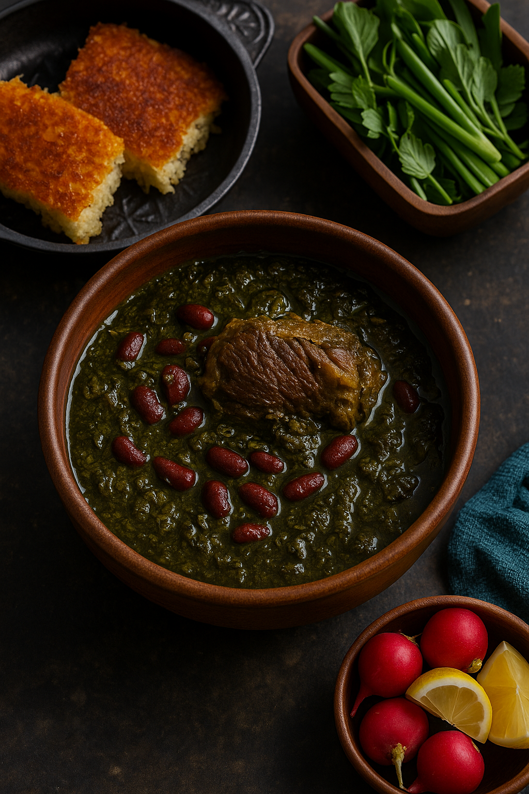

Southern Iran Style Ghorme Sabzi

Southern Iran is known for its bold and spicy flavors, and Ghorme Sabzi in this region reflects that beautifully. This version is cooked with local herbs and often includes chili peppers or spicy seasoning, giving it a deeper heat and intensity that distinguishes it from other regions.
Instructions:
- Sauté the herbs: Use the usual mix (parsley, coriander, leeks), but in southern style, more fenugreek and even dried mint are added. Fry until dark green and fragrant.
- Use spicy touches: Add 1–2 dried red chilies or a small spoon of red pepper flakes while cooking the onions or herbs.
- Prepare the stew: Brown lamb or beef with turmeric and black pepper. Add soaked kidney beans and herbs, and mix well.
- Add dried limes: Southern cooks often use more **limoo amani** for a stronger sour punch. Pierce and drop 3–4 into the stew.
- Cook slowly: Simmer for at least 2–3 hours for rich, well-developed flavor.
This spicy, rich version is beloved in cities like **Bandar Abbas** and **Bushehr**. It’s typically served with saffron rice and accompanied by spicy pickles or grilled chili on the side.